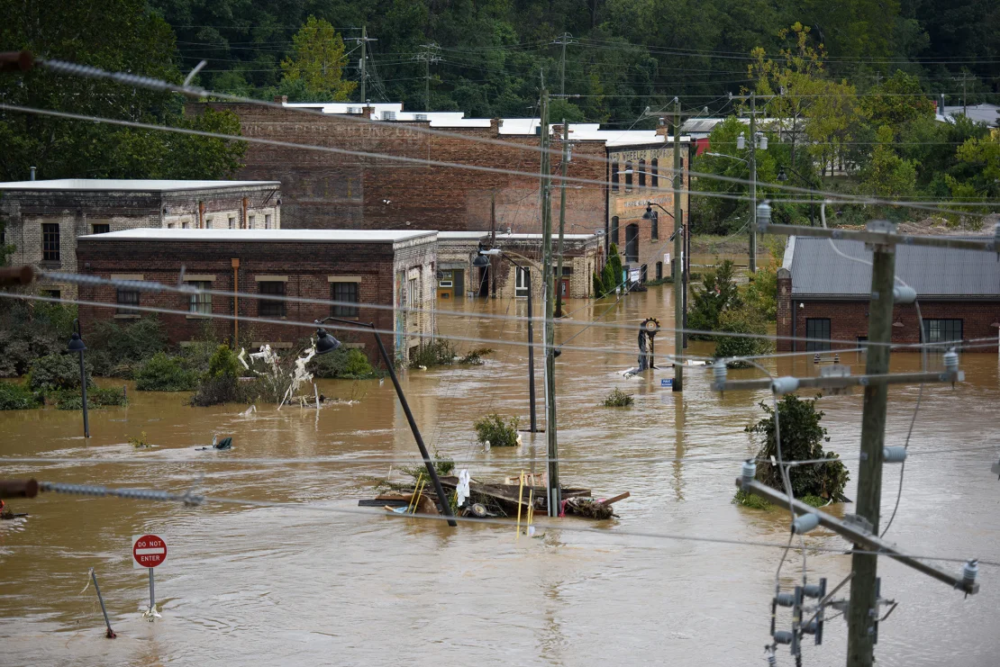

Prosecutors have consulted with Ryan Routh’s defense attorneys, who do not object to the government’s request, according to the filing.U.S. citizen Ryan Wesley Routh sticking up national flags of the countries helping Ukraine in Kyiv, Ukraine, on June 23, 2022. U.S. media said it was Routh who was arrested after Secret Service agents "opened fire on a gunman" carrying an AK-47 style rifle near the boundary of Donald Trump's Florida golf course where the former president was golfing on Sept. Federal prosecutors asked a Florida judge on Wednesday for an indefinite delay in scheduling the trial for the man accused of attempting to assassinate former President Donald Trump at his West Palm Beach golf course earlier this month, citing the large amount of evidence they still need to sift through. Ryan Routh, 58, appeared in federal court in West Palm Beach, Florida, on Monday where he pleaded not guilty to multiple charges, including attempted assassination of a major presidential candidate, assaulting a federal police officer, and felony weapons charges. Law enforcement officials allege that Routh, a roofing contractor, positioned himself with a rifle outside Trump International Golf Club in West Palm Beach on Sept. 15 while the former president was playing golf. ..see more
When they found the animal, the male passenger jumped out and grabbed the kitty, while the driver blocked traffic, causing a queue of cars. Los Angeles:Two animal lovers who stopped on a US freeway to rescue a stranded kitten caused a three-vehicle crash -- and then lost the cat they were trying to help.The couple spotted the stray moggy as they drove east on the CA-91 near Los Angeles on Wednesday, California Highway Patrol Officer Javier Navarro said.The woman driver got off at the next exit and headed back to search for the cat, slowing down to 35 miles (56 kilometers) an hour in the carpool lane -- the innermost lane.When they found the animal, the male passenger jumped out and grabbed the kitty, while the driver blocked traffic, causing a queue of cars. "Another car comes up behind them and swerves to the left to avoid rear-ending them, clips the left rear of the last car" sending it careering towards the man holding the cat, said Navarro. "The driver of that car swerves right to avoid the pedestrian, and ends up going across all lanes and hitting a semi-truck." Meanwhile, the man holding the cat hopped the center-divider to get out of the path of the car -- dropping the animal in the process. ..see more
The deep throw in the Kansas City Chiefs’ offense has all but disappeared. Last week was Patrick Mahomes’ 100th NFL game. No quarterback in league history has more wins, more passing yards, more passing touchdowns, or a higher passer rating than Mahomes through their first 100 games. He’s set the bar so high for himself and the Kansas City Chiefs’ offense that his statistics this year seem fairly pedestrian, and that’s something that’s not lost on the three-time Super Bowl MVP. Mahomes burst onto the scene in 2018 with a gunslinger mentality that produced an NFL-high 50 touchdown passes and numerous shots down the field. That type of offensive approach would continue for the next few years, but things have slowed since the start of the 2023 season. The 29-year-old’s numbers have decreased across the board, the deep throw in the Chiefs’ offense has all but disappeared, and the quarterback acknowledges Kansas City’s offense isn’t as entertaining as in his early days as a starter. “It’s not as fun,” Mahomes admitted to reporters when comparing the present Chiefs’ offense to before.“You’re not going to see a lot of one-play touchdowns unless you hit, like, a crazy shot. So, we have to keep working so that we can execute at a high level. And I think that has been something ..see more
Congratulations to Team Liquid, Grand Champions at The International 2024. Dropping only three games throughout their championship run, this relentless Liquid squad washed away a field of fearsome contenders to resoundingly earn their place as the finest Dota team in the world. Team Liquid's journey to the Aegis started smoothly with a pair of 2-0 series wins over Aurora and beastcoast, but a 0-2 showing against defending champions Team Spirit reminded everyone that the path to immortality is filled with formidable foes. Their next opponent would only prove that point further. With Liquid holding a 1-0 advantage and the Upper Bracket almost within reach, underdogs BB Team ran away with the second match of their seeding set, threatening Liquid with a much more difficult Lower Bracket path. Undaunted, Liquid leveraged early action in game three to build an avalanching lead and ultimately secure their place in the Upper Bracket to begin the next stage. Once there, the eventual champions never looked back. Their heroes were almost unkillable in a dominating 2-0 win over Xtreme Gaming, with only a single death amongst them in game two. Carrying that momentum forward, they opened their series on the main stage against Cloud9 with another stomp. ..see more
New research suggests the widespread use of fluoride in toothpaste may have minimized the benefits of water fluoridation. The widespread use of toothpaste and mouthwashes with added fluoride in recent decades appears to have diminished the known public health benefits of water fluoridation, a new study suggests. But it would be a mistake for municipalities to interpret the findings as a reason to pull back on adding the cavity-fighting mineral to their water systems, researchers said. “There’s no evidence to suggest that where water fluoridation programs are in place, that they should necessarily be stopped,” said Anne-Marie Glenny, a co-author of the study and a professor of health sciences research at the University of Manchester in the United Kingdom.Hundreds of U.S. communities, from Amery, Wisconsin, to Union County, North Carolina, are opting out of water fluoridation. City leaders often cite medical freedom as a reason, saying it should be up to voters, not governments, to decide what is and what isn’t added to the municipal water supply. Groups opposed to fluoride also raise concerns that it may affect children’s IQ levels. ..see more

CNN — Asheville was touted as a climate haven, a place to escape the worst ravages of extreme weather. But Hurricane Helene’s deadly path of destruction reveals this North Carolina city, like any in America, was never safe — it’s just that memories are short and the reach of the climate crisis is consistently underestimated. “If you live in a place that can rain, you live in a place that can flood,” said Kathie Dello, North Carolina’s state climatologist. The past week has shown that reality starkly.After Hurricane Helene made landfall in Florida as a Category 4 hurricane on Thursday, it raged northward and inflicted widespread devastation across six states, killing more than 160 people. It pummeled western North Carolina as a tropical storm Friday. In Buncombe County, where Asheville is the county seat, more than 50 people have died and many more remain missing.Asheville, home to about 95,000 people, lies decimated. Highways are torn up and power lines strewn like spaghetti. People are struggling to access food, water and electricity. Residents have likened Helene’s aftermath to a “war zone;” officials have described it as “post-apocalyptic.” ..see more
Jax Taylor resubmitted his divorce petition Thursday in Los Angeles under the representation of attorney Mark Vincent Kaplan, according to court documents obtained Friday by Page Six. The “Valley” star, 45, made some mistakes in his previous filing while representing himself. In Taylor’s initial paperwork, which he submitted late last month, he claimed he and his estranged wife, Brittany Cartwright, were never legally married and gave her full custody of their only child, 3-year-old son Cruz. “While Jax made errors in filling out forms that are usually done by trained legal professionals, those errors will be amended without delay,” the “Vanderpump Rules” alum’s rep told us in a statement Wednesday. The rep did not specify which part of Taylor’s filing was incorrect but noted that custody was not an issue in the former couple’s divorce. ..see more